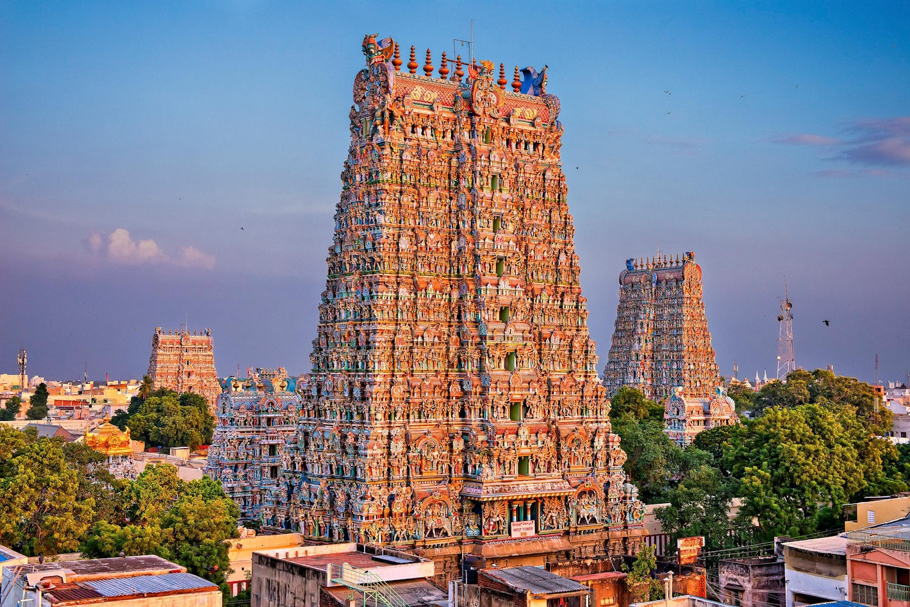

Tamil Nadu
"The Land of Temples"
Quick Facts
Popular Tourist Attractions
Mahabalipuram
Famous for rock-cut temples and shore temple architecture.
Meenakshi Temple
A historic temple in Madurai with vibrant sculptures and towers.
Ooty
A hill station in the Nilgiris, known for tea gardens and cool climate.
Nature & Wildlife
Home to several national parks and sanctuaries including Mudumalai and Gulf of Mannar. Wildlife includes tigers, elephants, and the endemic Nilgiri Tahr.
Famous Personalities
- Dr. A.P.J. Abdul Kalam: Former President of India and aerospace scientist.
- M.S. Subbulakshmi: Renowned Carnatic singer.
- R. K. Narayan: Celebrated author known for 'Malgudi Days'.
Local Handicrafts
Tamil Nadu is known for Kanchipuram silk sarees, Tanjore paintings, bronze idols, and stone carvings.
Climate
The state has a tropical climate, experiencing hot summers, mild winters, and rainfall mainly from the northeast monsoon.
Culture & Festivals
Dance
Bharatanatyam is the classical dance form native to Tamil Nadu.
Festivals
Pongal is a major harvest festival celebrated with joy and traditional rituals.
Food
Popular dishes include dosa, idli, sambar, chettinad curries, and more.
Attire
Women traditionally wear silk sarees and men wear veshti and angavastram.
Did You Know? Tamil Nadu has the highest number of heritage temples in India, many of them dating back over a thousand years.
Note: Information may be subject to updates. Kindly notify us of any discrepancies.